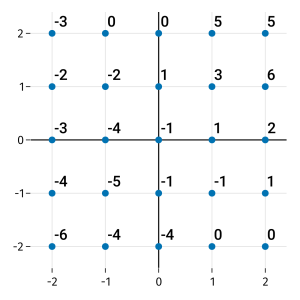
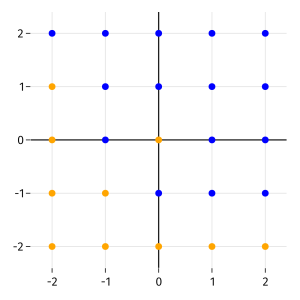

Exercises
4.7. Exercises¶
Suppose that the distinct plane points \((x_i,y_i)\) for \(i=1,\ldots,n\) are to be fit using a linear function without intercept, \(f(x)=\alpha x\). Use calculus to find a formula for the value of \(\alpha\) that minimizes the sum of squared residuals,
\[ r = \sum_{i=1}^n (f(x_i)-y_i)^2. \]Suppose that \(x_1=-2\), \(x_2=1\), and \(x_3=2\). Define \(\alpha\) as in Exercise 1, and define the predicted values \(\hat{y}_k=\alpha x_k\) for \(k=1,2,3\). Express each \(\hat{y}_k\) as a combination of the three values \(y_1\), \(y_2\), and \(y_3\), which remain arbitrary. (This is a special case of a general fact about linear regression: each prediction is a linear combination of the training values.)
Using the formulas derived in Linear regression, show that the point \((\bar{x},\bar{y})\) always lies on the linear regression line. (Hint: You only have to show that \(f(\bar{x}) = \bar{y}\). This can be done without first solving for \(a\) and \(b\), which is a bit tedious to write out.)
Suppose that values \(y_i\) for \(i=1,\ldots,n\) are to be fit to features \((u_i,v_i)\) using a multilinear function \(f(u,v)=\alpha u + \beta v\). Define the sum of squared residuals
\[ r = \sum_{i=1}^n (f(u_i,v_i)-y_i)^2. \]Show that by holding \(\alpha\) is constant and taking a derivative with respect to \(\beta\), and then holding \(\beta\) constant and taking a derivative with respect to \(\alpha\), at the minimum residual we must have
\[\begin{split} \left(\sum u_i^2 \right) \alpha + \left(\sum u_i v_i \right) \beta &= \sum u_i y_i, \\ \left(\sum u_i v_i \right) \alpha + \left(\sum v_i^2 \right) \beta &= \sum v_i y_i. \end{split}\]Repeat Exercise 1, but using the regularized residual
\[ \tilde{r} = C \alpha^2 + \sum_{i=1}^n (f(x_i)-y_i)^2. \]Repeat Exercise 4, but using the regularized residual
\[ \tilde{r} = C (\alpha^2 + \beta^2) + \sum_{i=1}^n (f(u_i,v_i)-y_i)^2. \]The probability \(p\) of winning a race is predicted to obey the fit \(\logit(p)=\alpha x + \beta\). If \(\alpha=3\), \(\beta=-1\), what are the odds (odds ratio) of winning the race at \(x=1\)?
Given the data set \((x_i,y_i)=\{(0,-1),(1,1),(2,3),(3,0),(4,3)\}\), find the MAD-based \(Q\) score for the following hypothetical decision tree splits.
(a) \(x \le 0.5\quad\) (b) \(x \le 1.5\quad\) (c) \(x \le 2.5\quad\) (d) \(x \le 3.5\)
Here are values on an integer lattice.
Let \(f(x_1,x_2)\) be a kNN regressor with \(k=4\), Euclidean metric, and mean averaging. Carefully sketch a one-dimensional plot of \(f\) along the given line.
(a) \(f(1.2,t)\) for \(2\le t \le 2\)
(b) \(f(t,-0.75)\) for \(2\le t \le 2\)
(c) \(f(t,1.6)\) for \(2\le t \le 2\)
(d) \(f(-0.25,t)\) for \(2\le t \le 2\)
Here are blue/orange labels on an integer lattice.
Let \(f(x_1,x_2)\) be a kNN probabilistic classifier with \(k=4\), Euclidean metric, and mean averaging. Carefully sketch a one-dimensional plot of the probability of the blue class along the given line.
(a) \(f(1.2,t)\) for \(2\le t \le 2\)
(b) \(f(t,-0.75)\) for \(2\le t \le 2\)
(c) \(f(t,1.6)\) for \(2\le t \le 2\)
(d) \(f(-0.25,t)\) for \(2\le t \le 2\)
Here are some label values and probabilistic predicted categories for them.
\[\begin{split} y: &\quad [0,0,1,1] \\ \hat{p}: &\quad [\tfrac{1}{4},0,\tfrac{1}{2},1] \end{split}\]Using base-2 logarithms, calculate the cross-entropy loss for these predictions.
Let \(\bfx=[-1,0,1]\) and \(\bfy=[0,1,0]\). This is to be fit to a probabilistic predictor \(\hat{p}(x) = \sigma(a x)\) for parameter \(a\).
(a) Show that the cross-entropy loss function \(L(a)\), using natural logarithms, satisfies
\[ L'(a) = \frac{e^a-1}{e^a+1}. \](b) Explain why part (a) implies that \(a=0\) is the global minimizer of the loss \(L\).
(c) Using the result of part (b), simplify the optimum predictor function \(\hat{p}\).
Let \(\bfx=[-1,1]\) and \(\bfy=[0,1]\). This is to be fit to a probabilistic predictor \(\hat{p}(x) = \sigma(a x)\) for parameter \(a\). Without regularization, the best fit takes \(a\to\infty\), which makes the predictor become infinitely steep at \(x=0\). To combat this behavior, let \(L\) be the cross-entropy loss function with LASSO penalty, i.e.,
\[ L(a) = \ln[1-\hat{p}(-1)] - \ln[\hat{p}(1)] + C |a|, \]for a positive regularization constant \(C\).
(a) Show that \(L'\) is never zero for \(a<0\).
(b) Show that if \(0<C<1\), then \(L'\) has a zero at
\[ a=\ln\left(\frac{2}{C}-1\right). \]Assume that this value minimizes \(L\).
(c) Show that the minimizer above is a decreasing function of \(C\). (Therefore, increasing \(C\) makes the predictor less steep as a function of \(x\).)